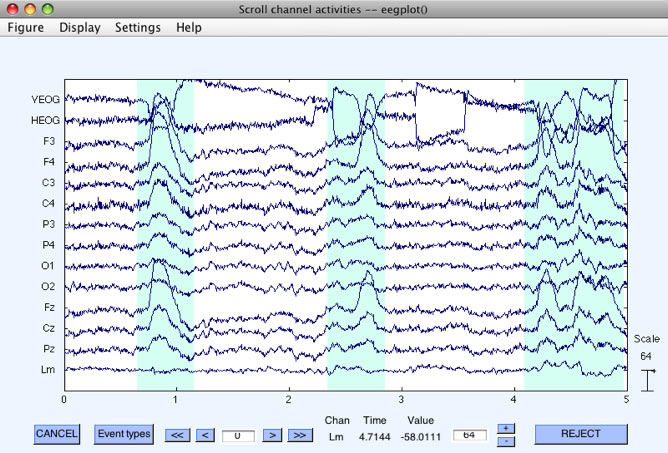
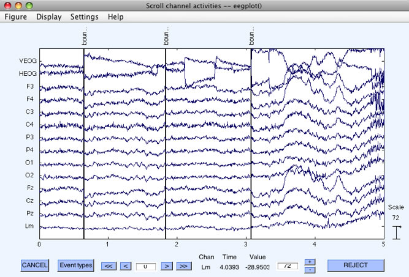
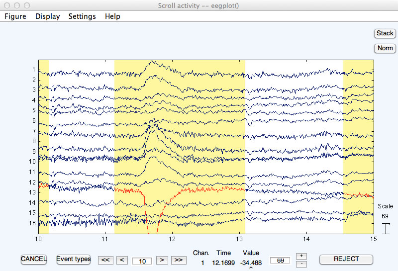

Artifact detection/rejection is ordinarily performed on epoched EEG data (see previous section). However, it is sometimes useful to delete "crazy" sections of the continuous EEG (e.g., prior to performing ICA). Procedures for this are described on this page. Note that these procedures actually delete sections of data (as opposed to simply marking them for rejection).
Rejection can be accomplished visually on the continuous EEG data by means of EEGLAB's Plot > Channel data (scroll) routine, as shown in the following screenshots. As you scroll through the data, you can drag the mouse pointer across sections of data that contain artifacts. This will highlight those sections of data (see the first of the two screenshots below). Once you have selected all of the to-be-rejected data segments within a dataset, you can click on the REJECT button. This causes EEGLAB to create a new dataset in which the marked segments are completely deleted, with a boundary code inserted to mark the places in which segments have been deleted. Once deleted, these segments are gone forever (although they are still present in the original dataset). This approach is particularly useful for deleting sections of "crazy" data prior to ICA-based artifact correction. It is not recommended as the way to perform conventional artifact rejection.


Rejection can be also accomplished automatically on the continuous EEG data by selecting ERPLAB > Artifact detection in continuous data. This routine puts up the window shown below.
When this routine runs, it checks a series of N-ms time periods (moving windows) for artifacts. You specify the length of these time periods by specifying the Moving Windows Width, which is set to 500 ms in the screenshot shown above. The Window Step paramater is set to 250 ms in this example. This means that it will check for artifacts in 500-ms windows, starting every 250 ms (e.g., 0-500 ms, 250-750 ms, 500-1000 ms, 750-1250 ms, etc.).
The routine checks each of these windows to see if the voltage exceeds a threshold. You can specify a positive threshold, a negative threshold, or both. In this example, we've selected thresholds of -200 and +200 µV. This means that a 500-ms period will be marked as a potential artifact if the voltage is less than -200 µV or greater than +200 µV at any point in that period. You also specify which channels should be checked for artifacts (all channels are checked by default).
When the routine finishes, it pops up EEGLAB's Plot channel data (scroll) window, and it marks every time window in which the voltage exceeded the threshold with a color that you select (yellow by default; see screenshot below). You can manually unmark a marked region by clicking on it. Once you are satisfied with the marked regions, you click on the REJECT button (see bottom right of screenshot). The marked data segments are then deleted, with a boundary mark inserted at each deletion point. Note that, in this example, a time period with a blink is marked for deletion. Ordinarily, you will specify a much higher threshold so that ordinary artifacts such as blinks are not deleted. Ordinary artifacts should be detected in epoched data.

This command has several useful options. First, it is useful to filter the data prior to determining which windows contain artifacts. Otherwise, slow drifts could cause the data to exceed the threshold. You can use the Pre-filter option for this. It filters a copy of the data for finding the artifacts, but the artifacts are marked in the original unfiltered data. A cutoff of around 0.1 Hz should work well to get rid of slow drifts. You may or may not want to also filter high frequencies (depending on the nature of the artifacts that you are trying to eliminate).
When you use this routine, you might find that there are several marked regions that are separated by short unrejected periods (e.g., 500 ms or less). There isn't much point in keeping these brief unrejected periods. The Join artifactual segments... option causes these brief unmarked regions to be marked for rejection. Similarly, you may want to reject regions only if they exceed a certain minimum length, and you can accomplish this with the Unmark artifactual segments shorter than option. Finally, you may wish to reject a period before and after each marked section, which you can accomplish with the Add extra time... option.
| <<Artifact Detection in Epoched Data | Table of Contents | Behavioral Analyses>> |
In this example, the data were sampled at 500 Hz (1 sample every 2 ms), and the 1000-ms epoch consisting of 500 samples began at -200 ms and ended at 798 ms (not at 800 ms, because the point at 798 ms represents the voltage from 798 ms to 799.99999 ms). Similarly, the 200-ms moving window actually goes from -200 to -4 ms, from -180 to +16 ms, etc.